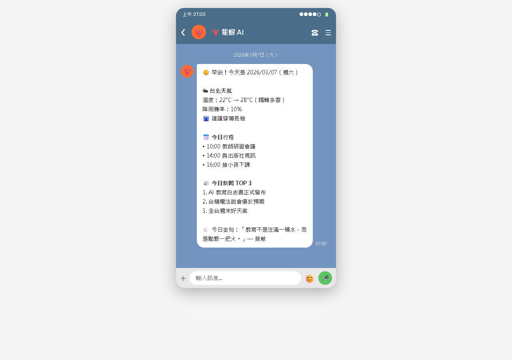
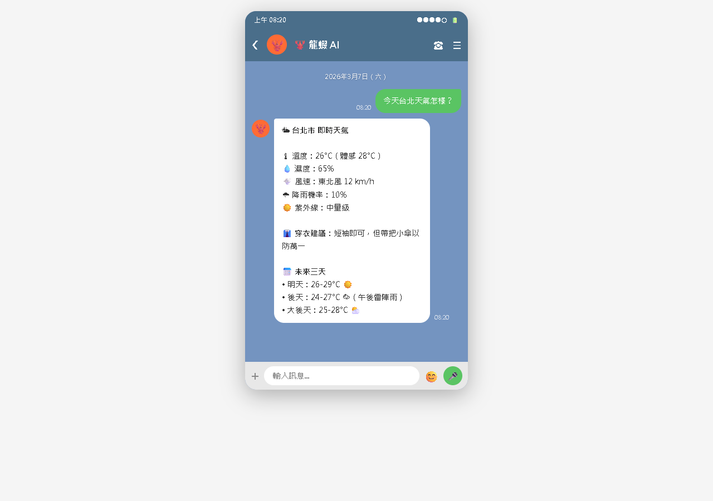
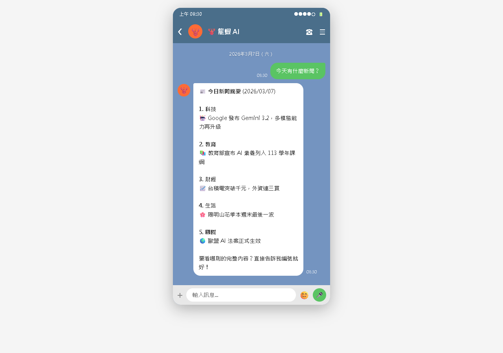
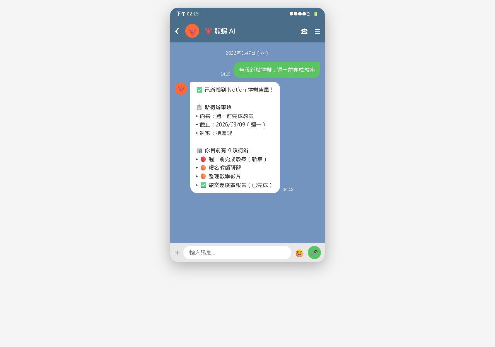
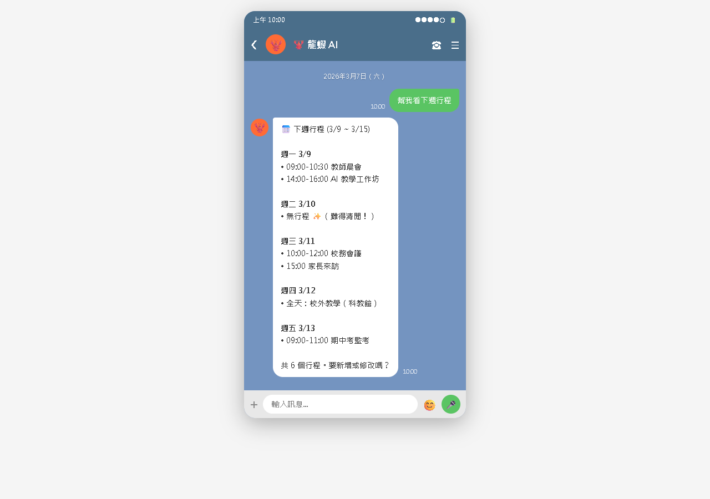

AI Agent 自主代理三王實戰
「裝了」跟「會用」是兩回事。這一章用六個實際生活場景，帶你體驗龍蝦 + 技能的真正威力
Heartbeat（心跳）是 OpenClaw 的「定時巡邏」機制。龍蝦會像盡責的管家一樣，每隔一段時間自動去做你交代的事，不需要你手動觸發。

檔案位置：~/.openclaw/workspace/HEARTBEAT.md，用自然語言寫就好：
# HEARTBEAT.md ## 每日任務 - 每天早上 08:00，查詢台北天氣，用簡短的話告訴我穿衣建議 - 每天早上 08:30，查看 Google Calendar 今日行程 - 每天晚上 21:00，問我今天過得怎麼樣 ## 每週任務 - 每週一早上 09:00，整理這週的待辦事項清單 - 每週五下午 17:00，回顧這週完成了什麼，給我鼓勵 ## 提醒事項 - 3/15 提醒我繳信用卡帳單
HEARTBEAT_OK）。
| Heartbeat | Cron | |
|---|---|---|
| 精確度 | 大約（±15 分鐘） | 精確到分鐘 |
| 設定方式 | 自然語言寫在 HEARTBEAT.md | 指令設定 |
| 適合 | 批次檢查、不需精確時間 | 精確時間提醒、一次性任務 |
| API 消耗 | 較少（批次處理） | 較多（每個獨立呼叫） |
# 早安助理（每天 07:30-08:00 之間執行） 每天早上幫我做以下事情，整合成一則訊息傳給我： 1. 查詢台北今天的天氣（溫度、降雨機率、穿衣建議） 2. 查看 Google Calendar 今天有什麼行程 3. 如果今天有會議，提醒我準備什麼 4. 用一句簡短的話幫我開啟美好的一天

clawdhub install weather # 在 TOOLS.md 加上： ## Weather - API Key: 你的_OpenWeatherMap_API_Key - 預設城市: 台北 - 溫度單位: 攝氏

clawdhub install news # 在 TOOLS.md 加上： ## News - API Key: 你的_NewsAPI_Key - 語言: 繁體中文 - 偏好類別: 科技、國際、財經 - 每次摘要數量: 5 則
整合龍蝦之後，你可以直接在 LINE 上跟龍蝦說話來操作 Notion——不用打開 Notion App、不用開電腦。

notion.so/my-integrations 建立 Integrationntn_ 開頭）整合龍蝦之後，你可以用說的來管行程——加行程、查行程、改行程，在 LINE 上一句話搞定。

不需要特別的技能，龍蝦用 AI 本身的能力就能幫你記帳：
龍蝦有記憶系統，會記住你說的事：
翻譯不需要額外技能，AI 模型本身就會：
| 問題 | 解決方式 |
|---|---|
| HEARTBEAT.md 任務沒有執行 | ① Heartbeat 功能沒啟用 → 檢查 AGENTS.md ② Gateway 沒在跑 → 需持續運行 ③ 時間未到（±15 分鐘誤差） ④ 格式有問題 → 確保合法 Markdown |
| 天氣技能回覆城市不對 | 在 TOOLS.md 設定預設城市，或每次明確說「台北天氣」 |
| Notion 連不上 | ① API Token 是否正確（ntn_ 開頭）② Integration 有沒有加入頁面 connections ③ 資料庫 ID 是否正確 |
| Google Calendar 沒有反應 | ① JSON 金鑰路徑錯誤 ② 服務帳號沒有被加為共用對象 ③ Calendar API 沒有啟用 |
| 這些技能會消耗很多 API 費用嗎？ | 大部分都有免費額度： OpenWeatherMap 每分鐘 60 次免費 NewsAPI 每天 100 次免費 Notion API 免費 Google Calendar API 每天 100 萬次 |
HEARTBEAT.md 讓龍蝦每天主動為你做事——不需要你傳訊息觸發
出門前自動告訴你帶不帶傘、穿什麼衣服
每天五分鐘掌握今日大事，搭配 Heartbeat 自動推送
在 LINE 上一句話管理待辦事項，走在路上也能操作
用說的管理行程——加行程、查行程、改行程
記帳、備忘錄、翻譯、食譜推薦——各種生活小幫手
📖 下一章預告：CH17 技能開發入門
光會「用技能」還不夠。如果你想要的功能沒有現成的技能呢？下一章教你自己開發技能——別被「開發」這個詞嚇到，其實就是寫一個 Markdown 檔案，比你想像的簡單得多！